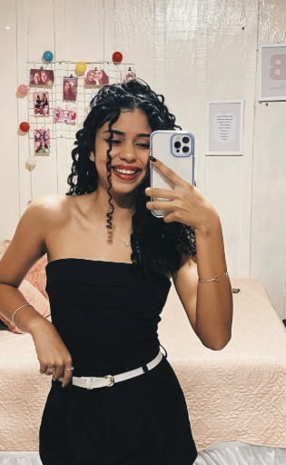

Olá! Me chamo Anna Flávia sou Técnica em Informática
Sou Técnica em Informática com experiência no desenvolvimento web e manutenção de sistemas computacionais, redes e suporte técnico. Apaixonado por tecnologia, busco criar soluções eficientes e inovadoras para otimizar processos e melhorar a experiência dos usuários. Minha atuação envolve desde a configuração de hardware e software até o desenvolvimento de aplicações funcionais e responsivas.
Saiba Mais!
